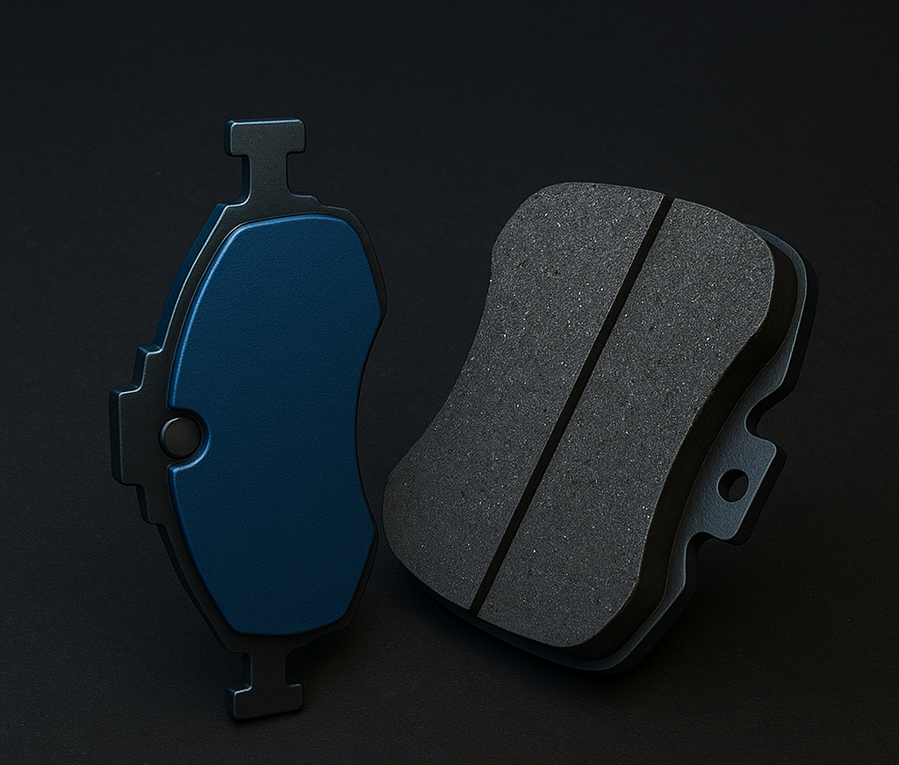
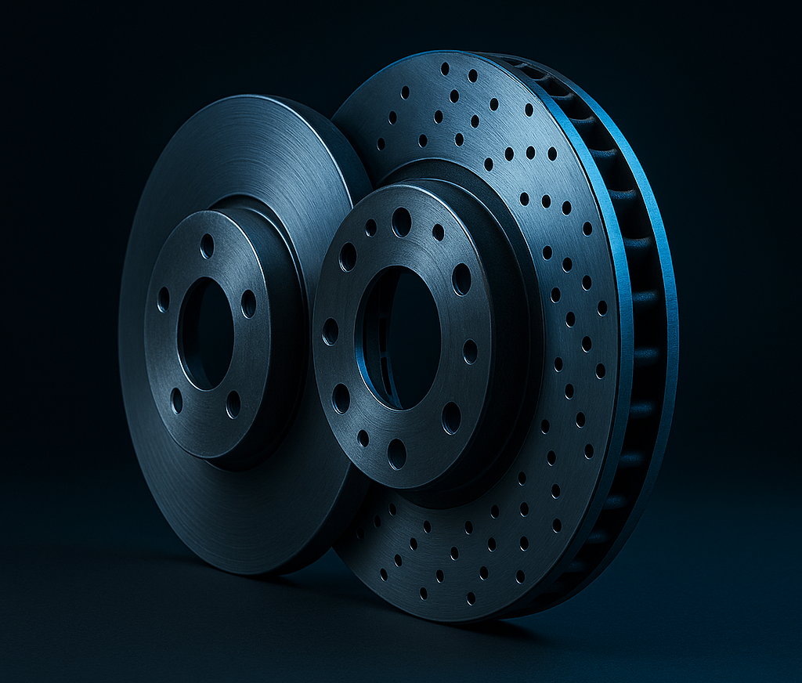
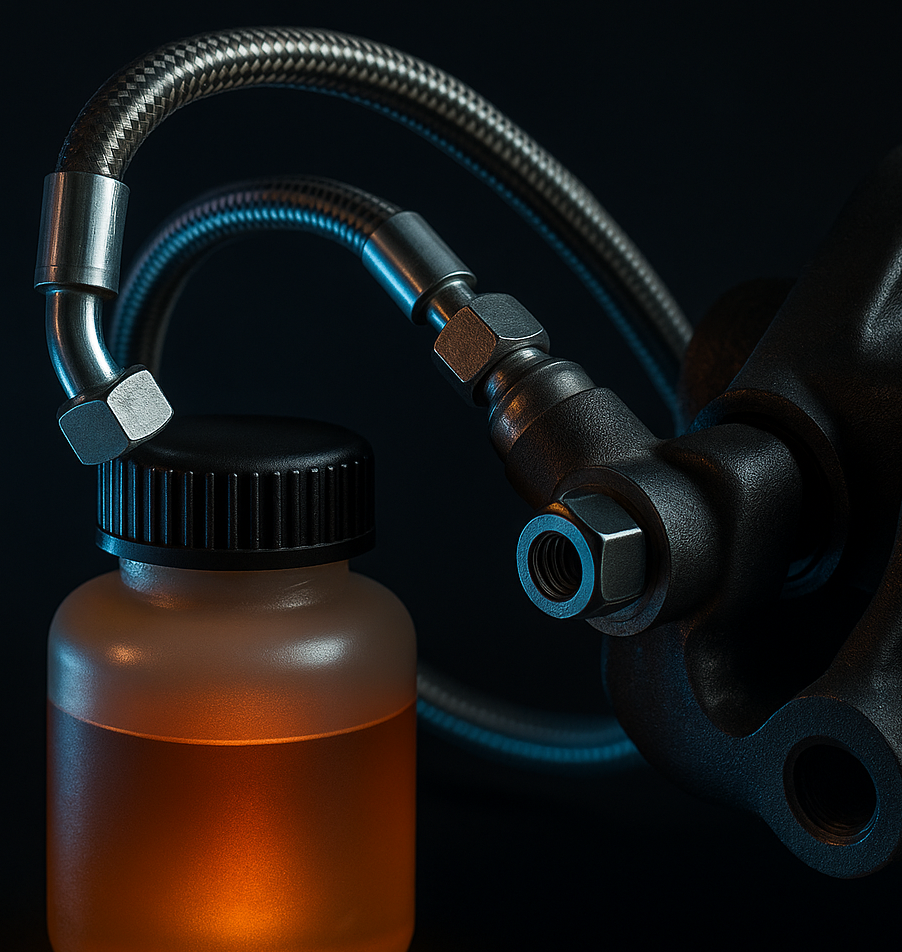

Braking System
Brakes are what turn speed into control. Every time you press the brake pedal, you’re converting the car’s kinetic energy (motion) into heat energy, using friction to slow the wheels down. A good braking system doesn’t just stop the car — it gives you confidence when driving fast, turning hard, or avoiding danger. Performance cars upgrade their brakes for more stopping power and fade resistance under heat.
Brake Pads
Brake pads are small friction blocks that press against the brake rotors to create resistance and slow the wheel down. They’re made from different materials (organic, metallic, ceramic) — each affects stopping power, noise, and dust. Think of them like the shoes your car wears to grip and slow down the spinning wheel. Performance pads can handle more heat but might make more noise or wear faster.
Brake Rotors (Discs)
Rotors are flat metal discs that spin with your wheels. When the pads squeeze them, the friction slows rotation. They come in different styles: Solid rotors — common for normal cars. Vented or drilled rotors — used in performance cars to let heat escape and prevent brake fade. Hot brakes lose performance — that’s why airflow and ventilation matter.
Calipers

The calipers are like big clamps that press the pads against the rotors. They use hydraulic pressure (from the brake fluid) to squeeze the pads tightly when you hit the brake pedal. Some are single-piston (basic), while high-performance ones have 4, 6, or even 8 pistons for even pressure. More pistons = better braking control and power.
Brake Lines & Fluid
When you press the brake pedal, it pushes fluid through brake lines to the calipers. That pressure is what makes the calipers clamp down. Brake fluid transfers force — it’s what connects your foot to the wheels. Over time, fluid can absorb moisture and lose performance, so tuners flush it regularly with high-temp fluid to prevent “brake fade.”